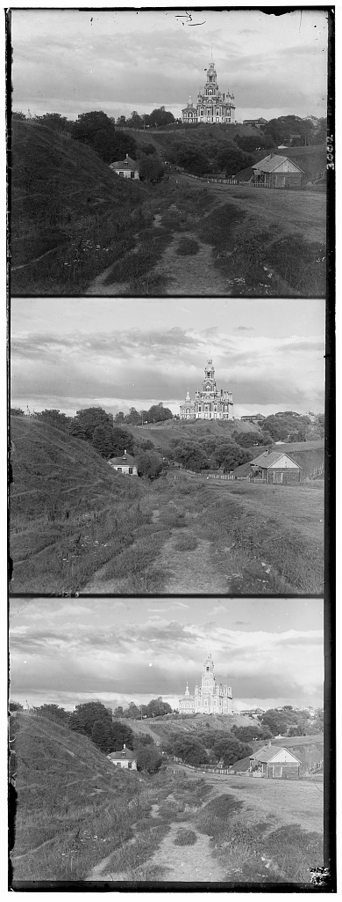
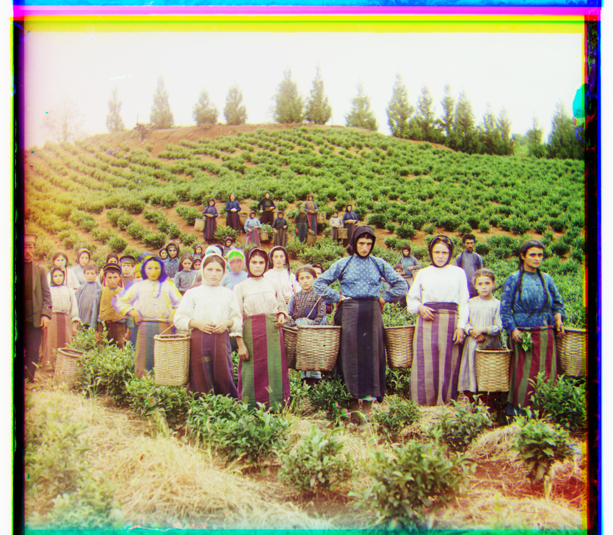
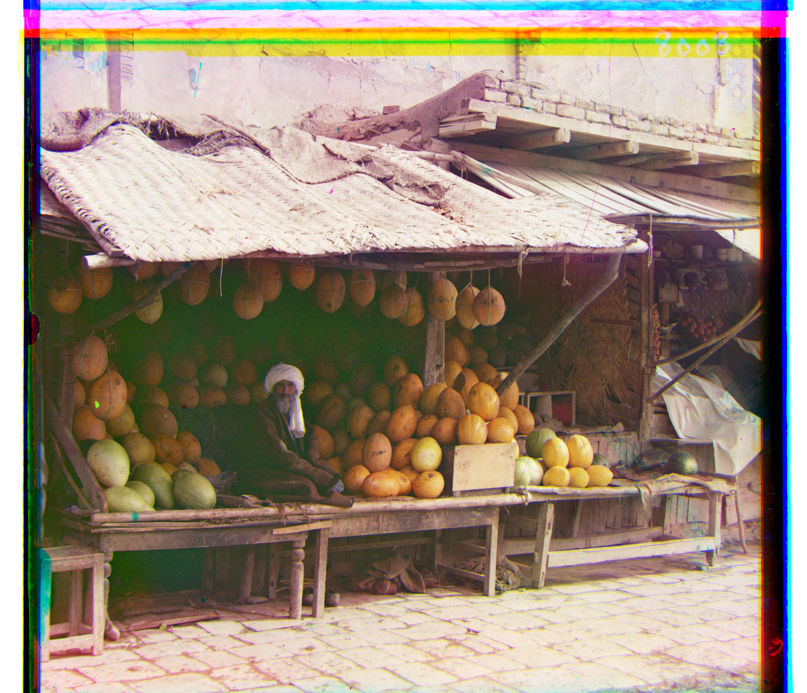
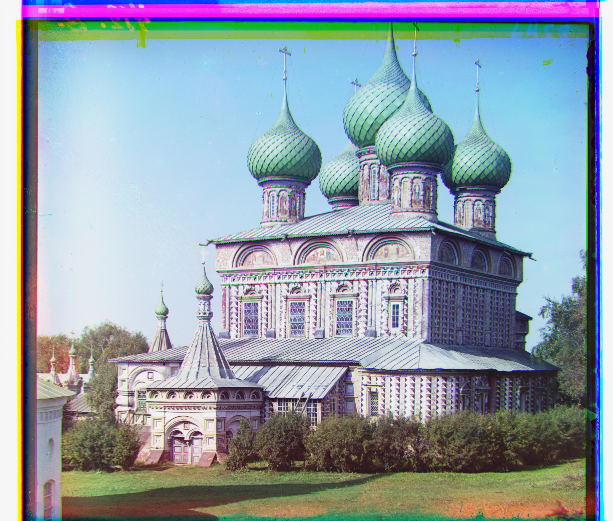
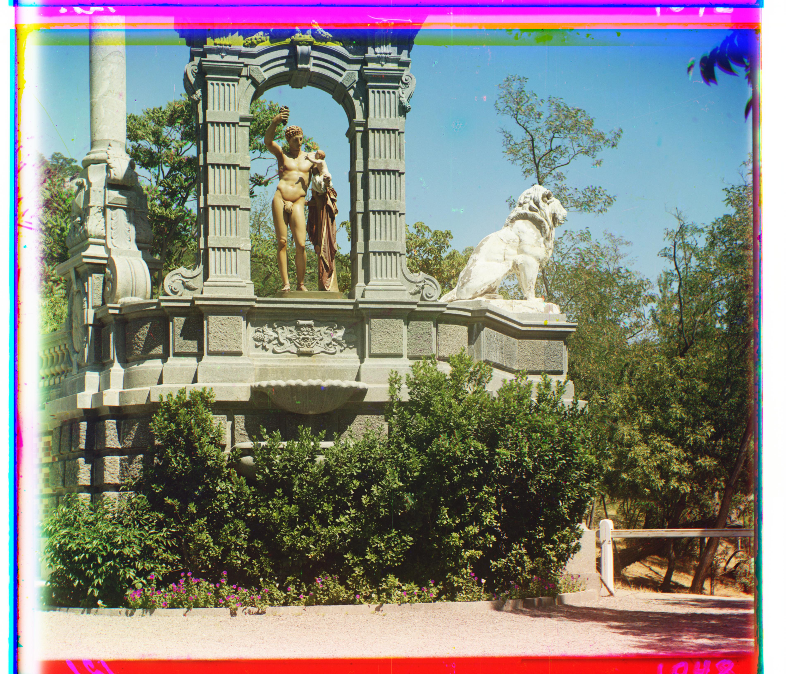
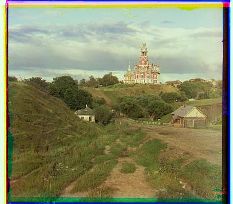
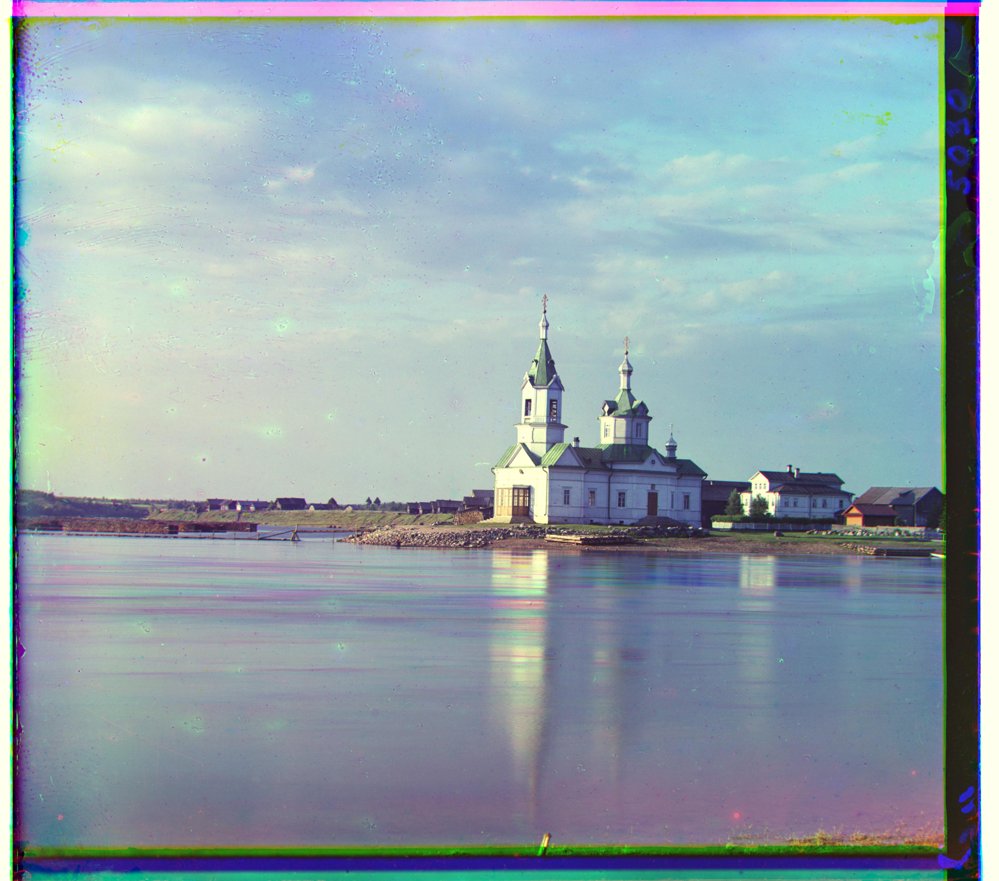
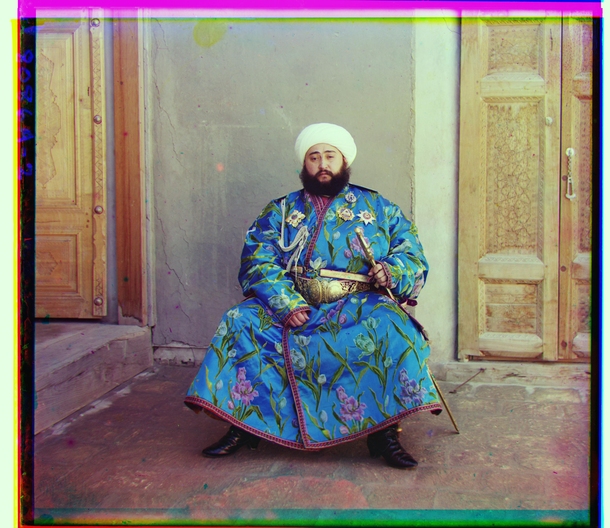

Background
Sergei Mikhailovich Prokudin-Gorskii (1863-1944) [Сергей Михайлович Прокудин-Горский, to his Russian friends] was a man well ahead of his time. Convinced, as early as 1907, that color photography was the wave of the future, he won Tzar's special permission to travel across the vast Russian Empire and take color photographs of everything he saw including the only color portrait of Leo Tolstoy. And he really photographed everything: people, buildings, landscapes, railroads, bridges... thousands of color pictures! His idea was simple: record three exposures of every scene onto a glass plate using a red, a green, and a blue filter. Never mind that there was no way to print color photographs until much later -- he envisioned special projectors to be installed in "multimedia" classrooms all across Russia where the children would be able to learn about their vast country. Alas, his plans never materialized: he left Russia in 1918, right after the revolution, never to return again. Luckily, his RGB glass plate negatives, capturing the last years of the Russian Empire, survived and were purchased in 1948 by the Library of Congress. The LoC has recently digitized the negatives and made them available on-line.
The Prokudin-Gorskii photo collection is a set of images taken with a camera that could take three grey-scale photos through three color filters. The goal of this project is to produce a color photo based on the three grey-scale photos.
|

|
Exhaustive Search
Approach
For small images, the algorithm can be applied directly at full resolution and consists of two main steps:
-
Image Alignment:
The first step is to determine the optimal way to align the three grayscale images. Proper alignment is crucial—if the images are not precisely stacked, the resulting color photo will appear blurry or mismatched. -
Color Image Construction:
After alignment, the images are shifted accordingly and combined to produce a single, vibrant color photograph.
Best Displacement
For the initial phase of the image alignment process, I developed a method to determine the optimal displacement for stacking three grayscale images into a single color photograph. This involves the following key steps:
- Implementing Normalized Cross-Correlation (NCC):
I used NCC, a technique that measures similarity between images by calculating the dot product of two normalized vectors (image1 / ||image1||andimage2 / ||image2||). Since each image is represented as a matrix, I normalize it by calculating its norm and reshaping it into a vector for comparison. - Searching Within a Defined Window:
The algorithm searches for the best alignment within a displacement window of[-15, 15]pixels along both the x and y axes. It evaluates the NCC score for each possible shift and identifies the displacement that yields the highest correlation, indicating the best match. - Addressing NCC Limitations with Border Cropping:
I discovered that relying solely on NCC often led to incorrect alignments due to interference from image borders. To improve accuracy, I implemented a cropping step, removing 15% of each side of the image. This allows the algorithm to focus on the central content, reducing border influence and enhancing processing speed.

green-shift: dx 2, dy 5 red-shift: dx 3, dy 12
|

green-shift: dx 2, dy -3red-shift: dx 2, dy 3 |

green-shift: dx 3, dy 3red-shift: dx 3, dy 6 |
Image Pyramid Processing
For larger images, such as those with a resolution of 3810x3251 pixels compared to 390x341 for smaller ones, the exhaustive search method for alignment becomes impractical due to excessive processing time. The higher resolution necessitates a larger displacement search range, increasing by a factor of 10 relative to the resolution increase. This results in an exponential rise in computational demand. To address this, I adopted a more efficient approach known as image pyramid processing.
This technique enhances efficiency through the following steps:
- Downscaling the Image: The process begins by reducing the image size by a factor of 2, creating a smaller version of the original.
- Creating a Multi-Level Pyramid: My algorithm constructs a pyramid of images with 5 levels, each at a progressively lower resolution.
- Iterative Displacement Calculation: At the base (lowest resolution) level, I apply the displacement algorithm to find an initial alignment. This shift is then updated and refined at each subsequent level, moving up to higher resolutions. This method ensures that the search range at each level remains comparable to that used for small images.
- Reducing Computational Load: By handling calculations at reduced resolutions initially, the overall processing effort at each level is significantly minimized, making the alignment process much faster.

green-shift: dx 2, dy 5red-shift: dx 3, dy 12 |

green-shift: dx 4, dy 25red-shift: dx -4, dy 58 |

green-shift: dx 24, dy 49red-shift: dx 41, dy 106 |
|

green-shift: dx 14, dy 60red-shift: dx 11, dy 124
|

green-shift: dx 16, dy 39red-shift: dx 23, dy 89 |

green-shift: dx 9, dy 57red-shift: dx 13, dy 120 |
|

green-shift: dx 10, dy 80red-shift: dx 14, dy 176 |

green-shift: dx 2, dy -3red-shift: dx 2, dy 3 |

green-shift: dx 24, dy 52red-shift: dx 35, dy 107
|
|

green-shift: dx -11, dy 33red-shift: dx -27, dy 140
|

green-shift: dx 29, dy 78red-shift: dx 37, dy 176
|

green-shift: dx 13, dy 52red-shift: dx 11, dy 111
|

green-shift: dx 3, dy 3red-shift: dx 3, dy 6 |

green-shift: dx 6, dy 42red-shift: dx 32, dy 87 |
Bell & Whistels
After reconstructing color photographs from the Prokudin-Gorskii collection, I observed that some images, such as "church.tif," still exhibited unnatural color casts. To address this issue, I implemented an automatic white balancing technique based on the white-patch algorithm. This method improves color accuracy through the following approach:
- Identifying a White Reference: The white-patch algorithm assumes that the brightest area in an image represents white. This serves as a keystone for correcting color casts across the entire image.
- Using the 95th Percentile for Precision: In my implementation, I selected the color value at the 95th percentile of brightness as the reference white. This avoids over-correction from extreme pixel values, providing a more balanced result compared to using the absolute brightest pixel.
- Normalizing Color Channels: Based on this reference, the algorithm normalizes the red, green, and blue channels, adjusting the overall color balance to achieve a more natural and realistic appearance.
This enhancement significantly improved the visual quality of the colorized photographs, ensuring the hues reflect a truer representation of the original scenes.
|
|

|
|
|

|
|
|

|